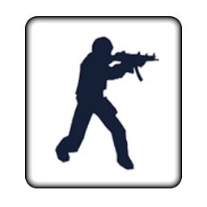
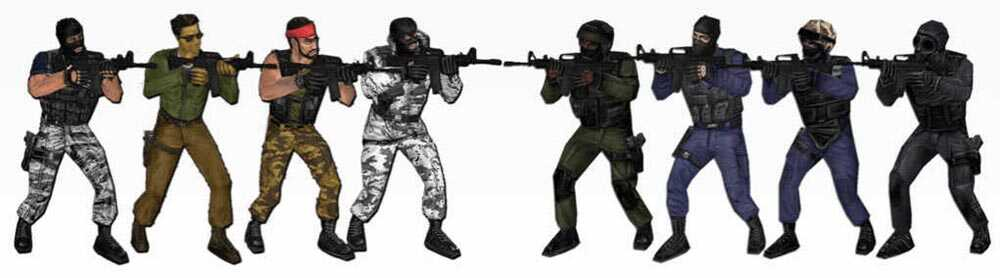
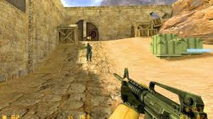

Counter-Strike (also known as Half-Life: Counter-Strike or Counter-Strike 1.6)
Counter-Strike (also known as Half-Life: Counter-Strike or Counter-Strike 1.6) is a tactical first-person shooter game developed by Valve. It was initially developed and released as a Half-Life modification by Minh "Gooseman" Le and Jess Cliffe in 1999, before Le and Cliffe were hired and the game's intellectual property acquired. Counter-Strike was released by Valve for Microsoft Windows in November 2000, and is the first installment in the Counter-Strike series. Several remakes and ports were released on Xbox, as well as OS X and Linux.
  Did you know?
There is a mod for Counter-Strike 1.6 called Counter-Strike Macedonia! Here is a link where you can download the game to try it: Click me!
Counter-Strike is a team-based multiplayer first-person shooter video game in which players can join either the terrorists (T) or the counter-terrorists (CT). If one team has more players than the other, the server settings may automatically balance. Each game begins with both teams spawning simultaneously as one of eight possible default character models (four each for counter-terrorist and terrorist). Each player begins with $800, two magazines of ammo, a knife, and a handgun, often a Heckler & Koch USP for the counter-terrorists or a Glock 18c for the terrorists. Players are usually allowed a few seconds before the round starts, known as freeze time to purchase equipment but not move. Players may purchase equipment whenever they are in a buy zone for their team, some of which can be shared by both sides and the round has not been in session for more than a certain duration, which is 90 seconds by default. Surviving players keep their equipment for the following game, while those who die start again with a handgun and knife.